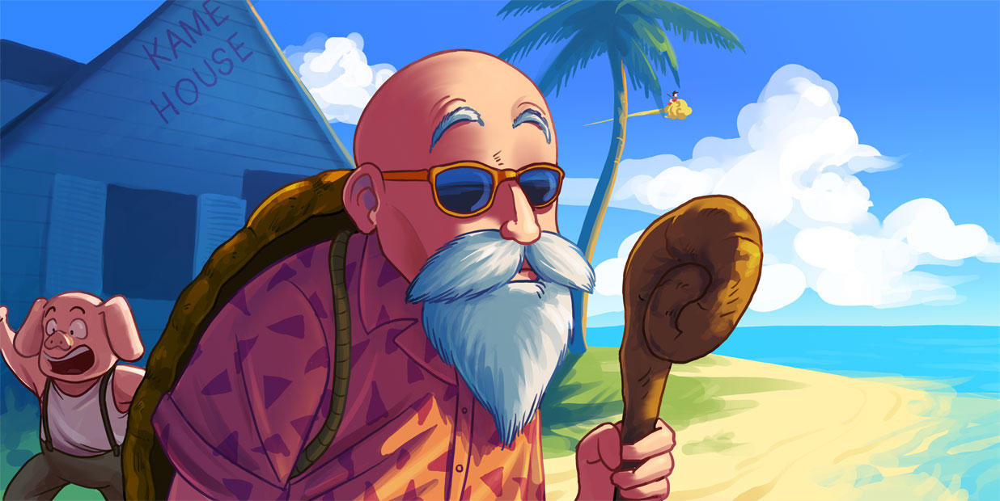

Tortue Géniale – Le maître de Goku
Connu aussi sous le nom de Kame Sennin, Tortue Géniale est un légendaire maître des arts martiaux. C’est lui qui a formé Goku et Krilin, et qui a transmis la fameuse technique du Kamehameha.
Sous ses airs de vieil homme tranquille se cache un combattant redoutable. Sage et plein d’humour, il aime tester ses élèves… mais reste un peu farceur.
Amateur de détente et de blagues, il porte toujours sa carapace emblématique. Son île et sa maison rose sont devenues des lieux mythiques de la série.
Inventeur du Kamehameha.
Fan de magazines coquins… mais il garde toujours un côté attendrissant !
Détenteur de la carapace de tortue emblématique.
Nouveautés
Restez à jour avec les dernières nouvelles et mises à jour de notre site.